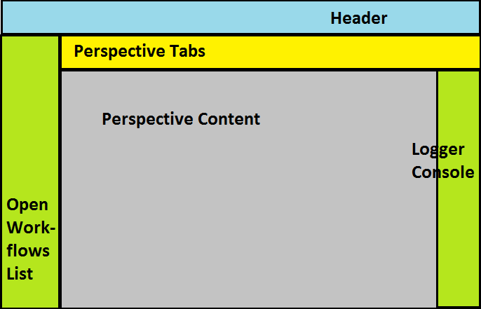

The basic layout of the workflow management tool is as follows:
At the very top is a header with basic information about the workflow management tool.
On the left is a list of all the workflow that are currently opened in the tool. By clicking on the different items in the list you can navigate between the currently opened list.
On the right is a logger console that can be used to get more information about the operations of the tool. This area by default starts off collapsed to save screen space, but it can be easily expanded.
Second from the top is a tab widget that shows all the different perspectives of the tool. By clicking on the different tabs you can navigate between the different perspectives.
The main area of the tool is the area labeled "Perspective Content." What is in this area depends on the perspective that you are currently in, but generally it has at least two standard areas: an area for buttons along the top, and a workflow canvas layer in the center.